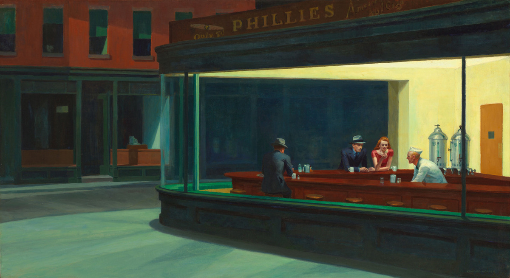
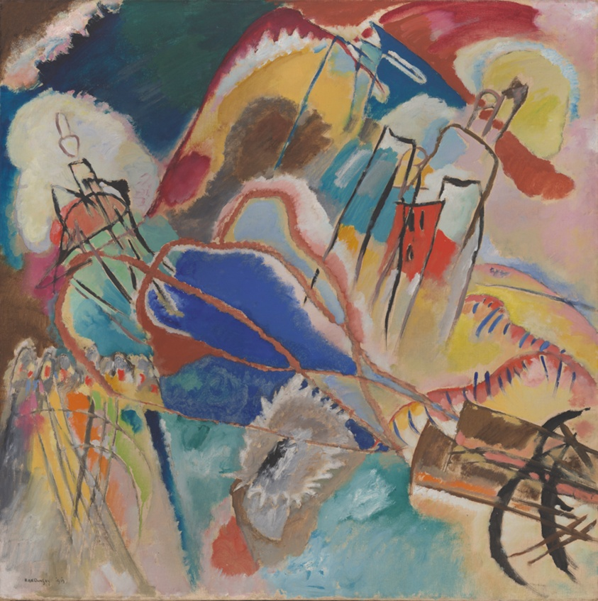
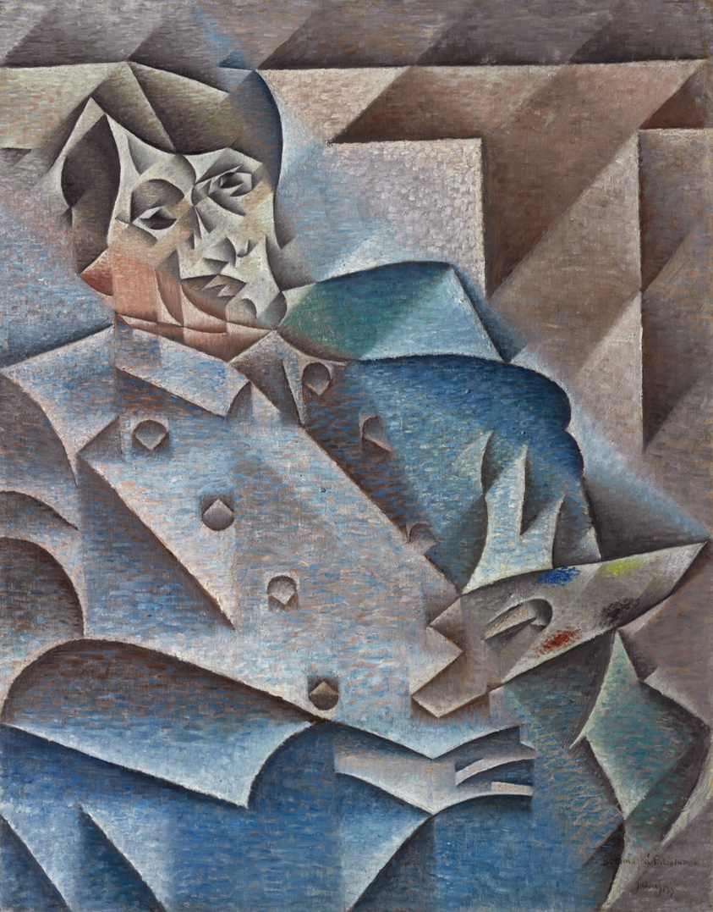

Nighthawks
Edward Hopper
About Nighthawks Edward Hopper recollected, “unconsciously, probably, I was painting the loneliness of a large city.” In an all-night diner, three customers sit at the counter opposite a server, each appear to be lost in thought and disengaged from one another. The composition is tightly organized and spare in details: there is no entrance to the establishment, no debris on the streets. Through harmonious geometric forms and the glow of the diner's electric lighting, Hopper created a serene, beautiful, yet enigmatic scene. Although inspired by a restaurant Hopper had seen on Greenwich Avenue in New York, the painting is not a realistic transcription of an actual place. As viewers, we are left to wonder about the figures, their relationships, and this imagined world.

Woman before an Aquarium
Henri Matisse
In the first two decades of the 20th century, Henri Matisse visited exhibitions of Islamic art and traveled to Algeria and Morocco, where he collected pottery, textiles, and tiles. Years later while living in Nice, France, Matisse reflected on these experiences, integrating visual elements he encountered, such as the patterned textile screen, into his paintings. In Woman before an Aquarium, the carefully subdued decorative pattern of the screen contributes to the psychologically rich, contemplative mood of this interior scene.

Improvisation No. 30 (Cannons)
Vasily Kandinsky
In his 1912 book Concerning the Spiritual in Art, Vasily Kandinsky made an analogy between music and painting as two means of abstraction, a radical mode of artmaking that freed color and line from their traditionally representational functions. Between 1910 and 1914 he produced “improvisations,” works he described as unconscious, spontaneous expressions. Kandinsky commented on Improvisation No. 30 (Cannons) in a letter to Arthur Jerome Eddy, a friend and collector from Chicago: “The cannons … could probably be explained by the constant war talk going on through the year [but] the true contents are what the spectator experiences while under the effect of the forms and color combinations of the picture.”

Portrait of Pablo Picasso
Juan Gris
In 1906 Juan Gris traveled to Paris, where he met Pablo Picasso and Georges Braque and participated in the development of Cubism. Just six years later, Gris too was known as a Cubist and identified by at least one critic as “Picasso's disciple.” Gris's style draws upon Analytic Cubism—with its deconstruction and simultaneous viewpoint of objects—but is distinguished by a more systematic geometry and crystalline structure. Here he fractured his sitter's head, neck, and torso into various planes and simple, geometric shapes but organized them within a regulated, compositional structure of diagonals. The artist further ordered the composition of this portrait by limiting his palette to cool blue, brown, and gray tones that, in juxtaposition, appear luminous and produce a gentle undulating rhythm across the surface of the painting. Gris depicted Picasso as a painter, palette in hand. The inscription, “Hommage à Pablo Picasso,” at the bottom right of the painting demonstrates Gris's respect for Picasso as a leader of the artistic circles of Paris and as an innovator of Cubism. At the same time, the inscription helped Gris solidify his own place within the Paris art world when he exhibited the portrait at the Salon des Indépendants in the spring of 1912.